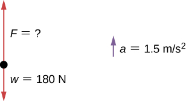
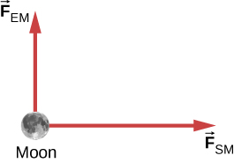

By the end of this section, you will be able to:
Mass and weight are often used interchangeably in everyday conversation. For example, our medical records often show our weight in kilograms but never in the correct units of newtons. In physics, however, there is an important distinction. Weight is the pull of Earth on an object. It depends on the distance from the center of Earth. Unlike weight, mass does not vary with location. The mass of an object is the same on Earth, in orbit, or on the surface of the Moon.
The equation is used to define net force in terms of mass, length, and time. As explained earlier, the SI unit of force is the newton. Since
Although almost the entire world uses the newton for the unit of force, in the United States, the most familiar unit of force is the pound (lb), where 1 N = 0.225 lb. Thus, a 225-lb person weighs 1000 N.
When an object is dropped, it accelerates toward the center of Earth. Newton’s second law says that a net force on an object is responsible for its acceleration. If air resistance is negligible, the net force on a falling object is the gravitational force, commonly called its weight , or its force due to gravity acting on an object of mass m. Weight can be denoted as a vector because it has a direction; down is, by definition, the direction of gravity, and hence, weight is a downward force. The magnitude of weight is denoted as w. Galileo was instrumental in showing that, in the absence of air resistance, all objects fall with the same acceleration g. Using Galileo’s result and Newton’s second law, we can derive an equation for weight.
Consider an object with mass m falling toward Earth. It experiences only the downward force of gravity, which is the weight . Newton’s second law says that the magnitude of the net external force on an object is We know that the acceleration of an object due to gravity is or . Substituting these into Newton’s second law gives us the following equations.
The gravitational force on a mass is its weight. We can write this in vector form, where is weight and m is mass, as
In scalar form, we can write
Since on Earth, the weight of a 1.00-kg object on Earth is 9.80 N:
When the net external force on an object is its weight, we say that it is in free fall, that is, the only force acting on the object is gravity. However, when objects on Earth fall downward, they are never truly in free fall because there is always some upward resistance force from the air acting on the object.
Acceleration due to gravity g varies slightly over the surface of Earth, so the weight of an object depends on its location and is not an intrinsic property of the object. Weight varies dramatically if we leave Earth’s surface. On the Moon, for example, acceleration due to gravity is only . A 1.0-kg mass thus has a weight of 9.8 N on Earth and only about 1.7 N on the Moon.
The broadest definition of weight in this sense is that the weight of an object is the gravitational force on it from the nearest large body, such as Earth, the Moon, or the Sun. This is the most common and useful definition of weight in physics. It differs dramatically, however, from the definition of weight used by NASA and the popular media in relation to space travel and exploration. When they speak of “weightlessness” and “microgravity,” they are referring to the phenomenon we call “free fall” in physics. We use the preceding definition of weight, force due to gravity acting on an object of mass m, and we make careful distinctions between free fall and actual weightlessness.
Be aware that weight and mass are different physical quantities, although they are closely related. Mass is an intrinsic property of an object: It is a quantity of matter. The quantity or amount of matter of an object is determined by the numbers of atoms and molecules of various types it contains. Because these numbers do not vary, in Newtonian physics, mass does not vary; therefore, its response to an applied force does not vary. In contrast, weight is the gravitational force acting on an object, so it does vary depending on gravity. For example, a person closer to the center of Earth, at a low elevation such as New Orleans, weighs slightly more than a person who is located in the higher elevation of Denver, even though they may have the same mass.
It is tempting to equate mass to weight, because most of our examples take place on Earth, where the weight of an object varies only a little with the location of the object. In addition, it is difficult to count and identify all of the atoms and molecules in an object, so mass is rarely determined in this manner. If we consider situations in which is a constant on Earth, we see that weight is directly proportional to mass m, since that is, the more massive an object is, the more it weighs. Operationally, the masses of objects are determined by comparison with the standard kilogram, as we discussed in Units and Measurement. But by comparing an object on Earth with one on the Moon, we can easily see a variation in weight but not in mass. For instance, on Earth, a 5.0-kg object weighs 49 N; on the Moon, where g is , the object weighs 8.4 N. However, the mass of the object is still 5.0 kg on the Moon.
Clearing a Field A farmer is lifting some moderately heavy rocks from a field to plant crops. He lifts a stone that weighs 40.0 lb. (about 180 N). What force does he apply if the stone accelerates at a rate of
Strategy We were given the weight of the stone, which we use in finding the net force on the stone. However, we also need to know its mass to apply Newton’s second law, so we must apply the equation for weight, , to determine the mass.
Solution No forces act in the horizontal direction, so we can concentrate on vertical forces, as shown in the following free-body diagram. We label the acceleration to the side; technically, it is not part of the free-body diagram, but it helps to remind us that the object accelerates upward (so the net force is upward).
Significance To apply Newton’s second law as the primary equation in solving a problem, we sometimes have to rely on other equations, such as the one for weight or one of the kinematic equations, to complete the solution.
Check Your Understanding For [link], find the acceleration when the farmer’s applied force is 230.0 N.
Can you avoid the boulder field and land safely just before your fuel runs out, as Neil Armstrong did in 1969? This version of the classic video game accurately simulates the real motion of the lunar lander, with the correct mass, thrust, fuel consumption rate, and lunar gravity. The real lunar lander is hard to control.
What is the relationship between weight and mass? Which is an intrinsic, unchanging property of a body?
How much does a 70-kg astronaut weight in space, far from any celestial body? What is her mass at this location?
The astronaut is truly weightless in the location described, because there is no large body (planet or star) nearby to exert a gravitational force. Her mass is 70 kg regardless of where she is located.
Which of the following statements is accurate?
(a) Mass and weight are the same thing expressed in different units.
(b) If an object has no weight, it must have no mass.
(c) If the weight of an object varies, so must the mass.
(d) Mass and inertia are different concepts.
(e) Weight is always proportional to mass.
When you stand on Earth, your feet push against it with a force equal to your weight. Why doesn’t Earth accelerate away from you?
The force you exert (a contact force equal in magnitude to your weight) is small. Earth is extremely massive by comparison. Thus, the acceleration of Earth would be incredibly small. To see this, use Newton’s second law to calculate the acceleration you would cause if your weight is 600.0 N and the mass of Earth is .
How would you give the value of in vector form?
The weight of an astronaut plus his space suit on the Moon is only 250 N. (a) How much does the suited astronaut weigh on Earth? (b) What is the mass on the Moon? On Earth?
a. ; b. Mass does not change, so the suited astronaut’s mass on both Earth and the Moon is
Suppose the mass of a fully loaded module in which astronauts take off from the Moon is kg. The thrust of its engines is N. (a) Calculate the module’s magnitude of acceleration in a vertical takeoff from the Moon. (b) Could it lift off from Earth? If not, why not? If it could, calculate the magnitude of its acceleration.
A rocket sled accelerates at a rate of . Its passenger has a mass of 75.0 kg. (a) Calculate the horizontal component of the force the seat exerts against his body. Compare this with his weight using a ratio. (b) Calculate the direction and magnitude of the total force the seat exerts against his body.
a. ;
b.
Repeat the previous problem for a situation in which the rocket sled accelerates opposite to the motion at a rate of . In this problem, the forces are exerted by the seat and the seat belt.
A body of mass 2.00 kg is pushed straight upward by a 25.0 N vertical force. What is its acceleration?
A car weighing 12,500 N starts from rest and accelerates to 83.0 km/h in 5.00 s. The friction force is 1350 N. Find the applied force produced by the engine.
A body with a mass of 10.0 kg is assumed to be in Earth’s gravitational field with . What is the net force on the body if there are no other external forces acting on the object?
98 N
A fireman has mass m; he hears the fire alarm and slides down the pole with acceleration a (which is less than g in magnitude). (a) Write an equation giving the vertical force he must apply to the pole. (b) If his mass is 90.0 kg and he accelerates at what is the magnitude of his applied force?
A baseball catcher is performing a stunt for a television commercial. He will catch a baseball (mass 145 g) dropped from a height of 60.0 m above his glove. His glove stops the ball in 0.0100 s. What is the force exerted by his glove on the ball?
497 N
When the Moon is directly overhead at sunset, the force by Earth on the Moon, , is essentially at to the force by the Sun on the Moon, , as shown below. Given that and all other forces on the Moon are negligible, and the mass of the Moon is determine the magnitude of the Moon’s acceleration.
